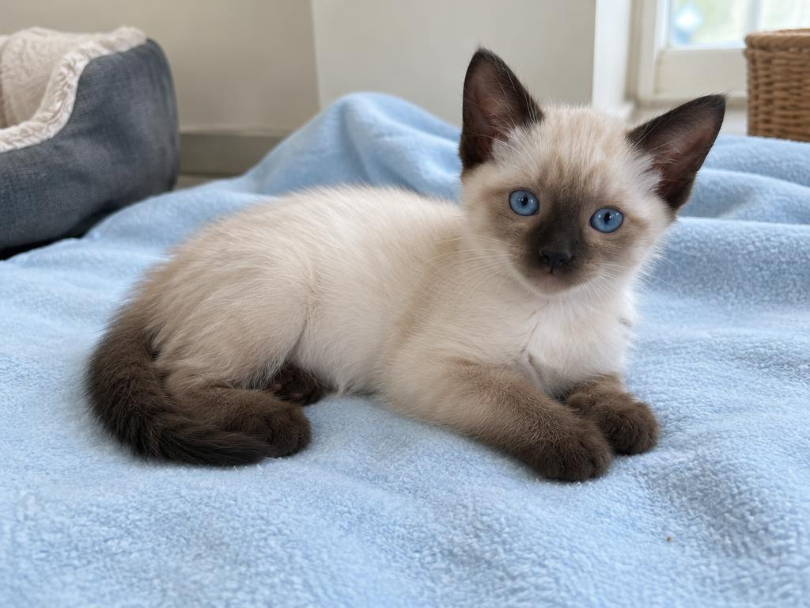
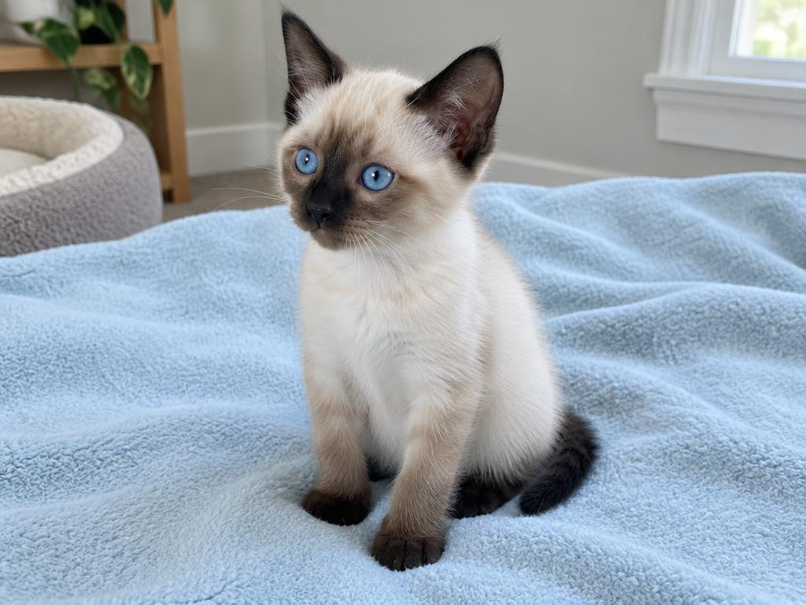

ENCONTROS QUE MUDAM VIDASPerfil demonstrativo


Um pequeno amor, um novo começo.Oi, eu sou
Oi, eu sou
Safira.
Guarulhos, SP
0102
2 mesesFêmeaPorte pequeno
Pequena no tamanho.
Gigante no carinho.
Curiosa, carinhosa e pronta para um novo começo.
✦ Carinhosa✦ Curiosa
MEU PRÓXIMO CAPÍTULO COMEÇA AQUIAbrigo responsável
A adoção acontece diretamente com a ONG.
Uma ponte entre vocês. Um mundo de possibilidades.